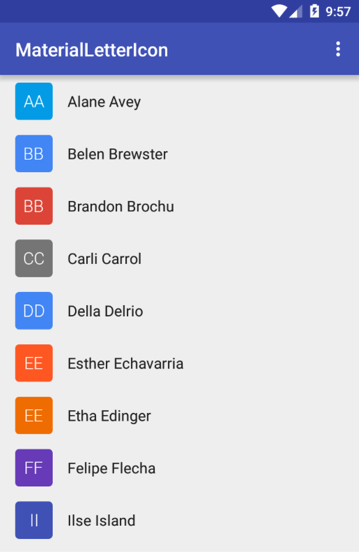
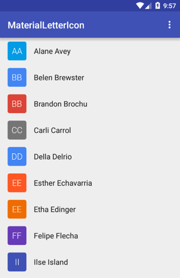

Material Letter Icon
Material letter icon with shape background. Replicates android L contacts icon view.


Variations

 


Download
compile 'com.github.ivbaranov:materiallettericon:0.2.2'Usage
Declare in XML (see xml attributes below for customization):
<com.github.ivbaranov.mli.MaterialLetterIcon
android:layout_width="@dimen/letter_icon_size"
android:layout_height="@dimen/letter_icon_size" />Or static initializer (see xml attributes below for customization):
MaterialLetterIcon icon = new MaterialLetterIcon.Builder(context) //
.shapeColor(getResources().getColor(R.color.circle_color))
.setShapeType(SHAPE.CIRCLE)
.letter("S")
.letterColor(getResources().getColor(R.color.letter_color))
.letterSize(26)
.lettersNumber(1)
.letterTypeface(yourTypeface)
.initials(false)
.initialsNumber(2)
.create();Configure using xml attributes or setters in code:
app:mli_shape_color="@color/black" // shape color resource
app:mli_shape_type="circle" // shape type (circle or rectangle)
app:mli_letter="" // letter, string or initials to get letters from
app:mli_letter_color="@color/white" // letter color
app:mli_letter_size="26" // letter size SP
app:mli_letters_number="1" // number of letters to get from `mli_letter`
app:mli_initials="false" // turn on initials mode (takes `mli_letters_number` of letters of each word in `mli_letter`)
app:mli_initials_number="2" // number of initials to be showedRectangular shape with rounded corners code:
MaterialLetterIcon icon = new MaterialLetterIcon.Builder(context) //
.shapeColor(getResources().getColor(R.color.circle_color))
.setShapeType(SHAPE.ROUND_RECT)
.setRoundRectRx(8) // default x-corner radius
.setRoundRectRy(8) // default x-corner radiusDeveloped By
Ivan Baranov
License
Copyright 2015 Ivan Baranov
Licensed under the Apache License, Version 2.0 (the "License");
you may not use this file except in compliance with the License.
You may obtain a copy of the License at
http://www.apache.org/licenses/LICENSE-2.0
Unless required by applicable law or agreed to in writing, software
distributed under the License is distributed on an "AS IS" BASIS,
WITHOUT WARRANTIES OR CONDITIONS OF ANY KIND, either express or implied.
See the License for the specific language governing permissions and
limitations under the License.